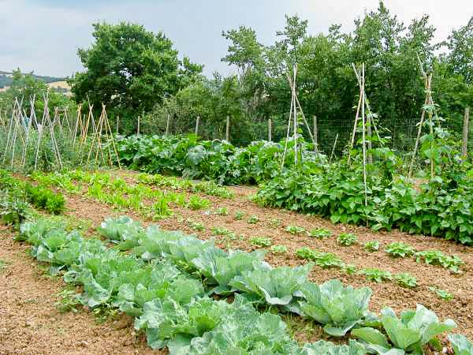
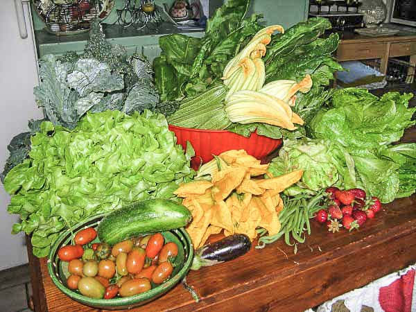

{% extends 'templates/layout.html' %}
{% block content %}
Noella's cooking

In my kitchen the essential products which form the base of my cooking come from my vegetable garden and from the nearby woods. In spring I gather grass herbs which grow on the hills around the farm and when I have time, simply because it
gives me so much satisfaction, I love to prepare potatoe gnocchi, or some of the many types of pasta, such as fettucine, lasagne, ravioli and pinci.For me, the very best plates are: il cinghiale, which is delicious wild boar, and il coniglio, which is tasty and tender rabbit. The sweet dishes I prepare generally serve both for dessert and breakfast, and as well as breads, tarts and cakes, I often bake traditional Italian sweets like crostate, ciambellone and pandolce.Perhaps all this talk of delicious food is making you interested in my Cookery Classes! I offer my classes to individuals, even one or two people, up to a maximum of 12 people in a small group. But whether individually or in a small group I would love to teach you the things you want to learn; we can plan the course program together to make sure you enjoy learning about fine Italian cooking which you can reproduce at home. The Cookery Course outline which I suggest below will give you an idea of the program I have found to work extremely well.I'm looking forward to showing you my garden, to cooking some delicious dinners for you, and above all to seeing you soon at Aiole.
{% endblock %}
{% block content2 %}
Aiole's Products

Here at Aiole in the stunning Valley of Orcia, with 400 silvery olive trees planted around the hills, our major farm production is a superb olive oil which is cold pressed at a nearby mill in the traditional way, and which results in a
superior quality organic and nutritional extra virgin olive oil.We begin harvesting our olives in November and if you are staying with us at Aiole during November or December you will be most welcome to join in the harvest. When the timing makes it possible, you can come to the mill while the olives are being crushed, watching the silky oil trickle out between the straw mats. The energy you have expended picking the olives will then be rewarded as we pour the newly pressed piquant olive oil onto Tuscan bread, savouring a healthy and delicious traditional Tuscan treat. Some years, when the harvest is plentiful, we are able to offer our guests bottles of olive oil from the farm, but in any case you will be able to taste the oil in the dishes prepared in our farm kitchen because we always use our own quality olive oil in the preparation of the meals requested by our guests, which we very often sit down together to eat. Other wonderful products from our farm include those grown by Noella in our vegetable garden. These are the fresh, natural and healthy ingredients which Noella uses for all the dishes from the kitchen. Our fruit is picked from the trees in the garden, nd the blackberries, which we gather in the nearby woods, form the basis for our marmalades and tarts which are served to our guests at breakfast.In spring and in autumn, if it is a special interest of yours, you can accompany Noella on a walk through the woods and learn about the edible plants and herbs which grow wild in the woods.
And of course, when the season is appropriate, our woods offer a vast variety of mushrooms, some of them are edible, others are definitely not!.
{% endblock %}